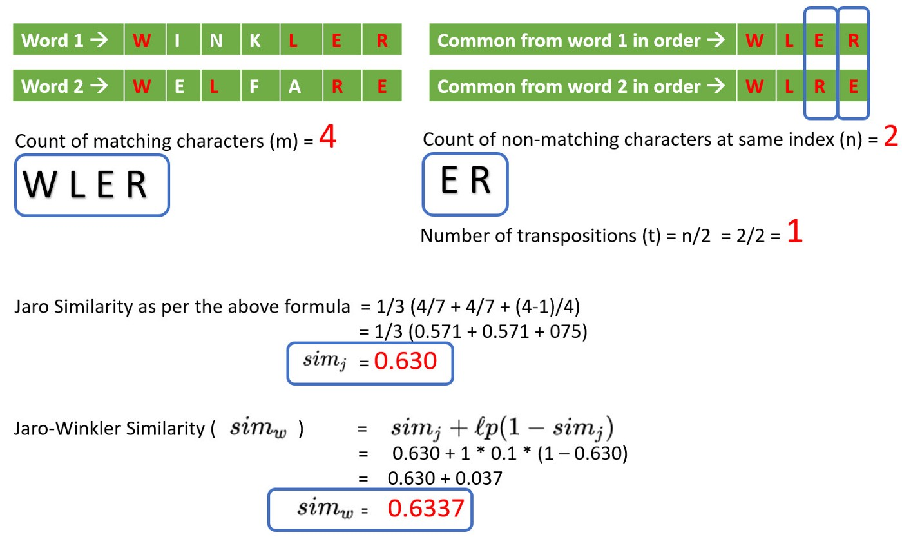
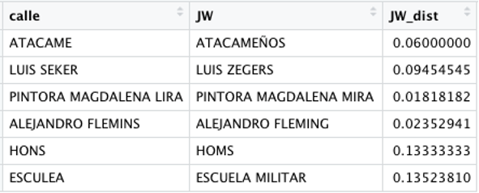

# librerías
library(sf)
library(dplyr)
library(tidygeocoder)
library(tidyr)
library(stringdist)6 Geocoding
Direcciones a Coordenadas
6.1 Introducción
La geocodificación es el proceso de convertir direcciones físicas (por ejemplo, “Presidente Errázuriz 3485, Las Condes”) en coordenadas geográficas (latitud y longitud), que se pueden utilizar para posicionar elementos o eventos en el espacio de un mapa o para análisis espaciales. Este proceso es fundamental en diversos proyectos de análisis espacial, ya que permite transformar datos textuales en información espacial.
Para realizar el proceso de geocodificación de direcciones es necesario contar con un motor de geocodificación que es un servicio o sistema que convierte direcciones físicas en coordenadas geográficas (latitud y longitud), o viceversa, un proceso conocido como “reverse geocoding”. Estos motores son esenciales para analizar datos espaciales cuando la información disponible está en formato de texto (como direcciones postales). Los motores de geocodificación utilizan bases de datos geográficas y algoritmos de correspondencia para ubicar puntos específicos en un mapa a partir de descripciones textuales. Dependiendo del motor, pueden ofrecer características adicionales, como filtrado por región, cálculos de rutas, o integración con sistemas de tráfico en tiempo real. La siguiente tabla compara varios motores de geocodificación en cuanto a características, cobertura, precisión y si son gratuitos o de pago.
| Motor | Tipo | Cobertura | Precisión | Límite Gratuito | Características Adicionales |
|---|---|---|---|---|---|
| Google Geocoding API | De pago | Mundial | Alta | 40,000 diarias | Geocodificación y “reverse geocoding”, alta calidad. |
| OpenStreetMap Nominatim | Gratuito | Mundial | Buena | Límite bajo | Basado en OpenStreetMap, infraestructura propia recomendada. |
| HERE Geocoder API | De pago | Mundial | Alta | 250,000 mensuales | Filtrado avanzado, datos de tráfico en tiempo real. |
| Mapbox Geocoding API | De pago | Mundial | Alta | 100,000 mensuales | Integración con Mapbox, geocodificación en tiempo real. |
| Bing Maps Geocoding API | De pago | Mundial | Alta | 125,000 mensuales | Información adicional sobre tipo de localización. |
| Geocode.xyz | Gratuito | Mundial | Moderada | 1,000 diarias | Servicio gratuito con opciones de pago. |
| TomTom Geocoding API | De pago | Mundial | Alta | 2,500 diarias | Uso en navegación y tráfico en tiempo real. |
Etapas En los procesos de geocodificación de direcciones, las etapas de transformación pueden ser numerosas y variadas, dependiendo del tipo de direcciones y los errores que puedan contener. Cada dirección puede presentar desafíos únicos, como errores tipográficos, variaciones en la nomenclatura o información incompleta, lo que hace que estos procesos sean, en cierto modo, artesanales, ya que requieren ajustes específicos para mejorar la precisión de los resultados. En este capítulo nos enfocaremos en tres etapas fundamentales, pero es importante destacar que el número de etapas puede ampliarse dependiendo de la complejidad de las direcciones:
Etapa 0: Consolidación de Bases, Integración de las diferentes fuentes de datos para generar una base unificada de direcciones.
Etapa 1: Limpieza Inicial: Normalización básica de las direcciones, como eliminar tildes y convertir todo a mayúsculas.
Etapa 2: Limpieza Específica: Ajustes más detallados, dependiendo de la estructura de las direcciones, para corregir errores comunes.
Etapa 3: Distancia Jaro-Winkler: Comparación y corrección de nombres de calles utilizando la métrica de similitud Jaro-Winkler.
Aunque nos enfocamos en estas tres etapas, los procesos de geocodificación pueden incluir muchas más fases según las características de los datos y la precisión deseada.
Este documento presenta un enfoque paso a paso del proceso de geocodificación utilizando R. Exploraremos cómo convertir direcciones en coordenadas y cómo calcular distancias entre puntos geográficos utilizando varias librerías de R, como tidygeocoder, sf, y dplyr.
6.2 Consolidación de Bases
Objetivos:
- Conocer la base de datos, en estructura y contenidos, para analizarla a fin de estimar niveles de complejidad en su posterior procesamiento.
- Consolidar las bases de datos en una sola con solamente la información necesaria para la georeferenciación, donde cada registro tiene una variable denominada ID que permite identificar su fuente y correlativo.
Librerías
Leer las Bases:
# direcciones <- readRDS("data/direcciones/dirs_60.rds")
# direcciones$NUMERO <- as.numeric(direcciones$NUMERO) + 5
# saveRDS(direcciones, "data/direcciones/dirs_60.rds")
direcciones <- readRDS("data/direcciones/dirs_60.rds")
head(direcciones)| ID | SEDE | CALLE | NUMERO | COMUNA | REGION |
|---|---|---|---|---|---|
| MT_090992 | CAMPUS ARAUCO | PSJE ZARATE | 29 | ARAUCO | VIII - BIO-BIO |
| MT_069161 | PLAZA VESPUCIO | BOLIVAR | 5903 | PEÑALOLÉN | RM - METROPOLITANA |
| MT_079411 | VIÑA DEL MAR | SANTA SARA | 1727 | VILLA ALEMANA | V - VALPARAISO |
| MT_029721 | ALAMEDA | CASA GRANDE | 8856 | LO ESPEJO | RM - METROPOLITANA |
| DS_008657 | PUENTE ALTO | MARCELA PAZ | 3512 | LA FLORIDA | RM - METROPOLITANA |
| DS_006472 | PLAZA NORTE | PSJE ARGEL | 1625 | CONCHALÍ | RM - METROPOLITANA |
| MT_072766 | SAN BERNARDO | Volcan Antuco | 14488 | S/ BERNARDO | RM - METROPOLITANA |
| MT_021510 | PLAZA NORTE | SAN AGUSTIN ORIENTE | 4362 | LAMPA | RM - METROPOLITANA |
| MT_076946 | SAN JOAQUIN | EMILIO TAGLE | 10284 | LA FLORIDA | RM - METROPOLITANA |
| MT_047169 | VALPARAISO | CALI | 791 | LA CALERA | V - VALPARAISO |
Tomaremos como ejemplo 60 direcciones para hacer el proceso de geocodificación, donde ya tenemos filtradas las columnas de interés como también un ID único para cada registro.
6.3 Etapa 1: Limpieza Inicial
Para el proceso de limpieza inicial, se puede escribir cualquier función que se considere adecuada según la naturaleza de las direcciones, teniendo siempre en cuenta el motor de geocodificación que se utilizará. Estos motores son sensibles al formato del texto, por lo que es crucial que las direcciones estén bien formateadas para mejorar la precisión del proceso de geocodificación. A continuación, presentamos un ejemplo de función. La función limpieza() es útil cuando necesitamos estandarizar cadenas de texto eliminando tildes, convirtiendo todo a mayúsculas y limpiando ciertos caracteres no deseados. Su funcionamiento es el siguiente:
- Conversión a mayúsculas: Utiliza la función stringr::str_to_upper para convertir todas las letras en mayúsculas.
- Eliminación de tildes: Mediante chartr, las vocales con tilde (ÁÉÍÓÚ) son reemplazadas por sus equivalentes sin tilde (AEIOU), normalizando las vocales.
- Eliminación de puntuación: Se eliminan todos los signos de puntuación excepto el apóstrofe (esto es útil para nombres como “O’Higgins”).
- Limpieza de caracteres no deseados: Elimina símbolos específicos, como el carácter º.
- Espacios: Usa str_squish para eliminar espacios innecesarios, como los que se encuentran al inicio o los que están repetidos entre palabras.
Esta función es muy útil para preparar texto en análisis de datos o cuando queremos asegurarnos de que las entradas de texto sean uniformes y fáciles de comparar.
# Función para dejar todo en mayúscula y sin tildes
limpieza <- function(x) {
# x <- stri_trans_general(x,"latin-ASCII") # eliminar tildes
x <- stringr::str_to_upper(x) # mayúsculas
x <- chartr("ÁÉÍÓÚ", "AEIOU", x)
x <- gsub("(?!')[[:punct:]]", "", x, perl=TRUE) #Excepción apostrofe de o'higgins
x <- gsub(pattern = 'º', "", x)
x <- stringr::str_squish(x) # eliminar espacios al comienzo y espacios repetidos
x
}Aplicación de la función de limpieza
direcciones <- direcciones %>% mutate(CALLE = limpieza(CALLE))| ID | SEDE | CALLE | NUMERO | COMUNA | REGION |
|---|---|---|---|---|---|
| MT_090992 | CAMPUS ARAUCO | PSJE ZARATE | 29 | ARAUCO | VIII - BIO-BIO |
| MT_069161 | PLAZA VESPUCIO | BOLIVAR | 5903 | PEÑALOLÉN | RM - METROPOLITANA |
| MT_079411 | VIÑA DEL MAR | SANTA SARA | 1727 | VILLA ALEMANA | V - VALPARAISO |
| MT_029721 | ALAMEDA | CASA GRANDE | 8856 | LO ESPEJO | RM - METROPOLITANA |
| DS_008657 | PUENTE ALTO | MARCELA PAZ | 3512 | LA FLORIDA | RM - METROPOLITANA |
| DS_006472 | PLAZA NORTE | PSJE ARGEL | 1625 | CONCHALÍ | RM - METROPOLITANA |
Generar columna de Consulta:
El siguiente código crea dos nuevas columnas en el marco de datos direcciones. La columna CONSULTA concatena el número, la calle, la comuna y la región en un solo campo. Esto es necesario para la geocodificación, ya que los motores de geocodificación requieren una dirección completa en un formato estándar para poder convertirla en coordenadas geográficas. (Ejemplo ver parámetros de búsqueda en nominatim)
Además, se crea la columna ETAPA, que registra el valor 1 para indicar que la dirección se encuentra en la primera etapa del proceso de geocodificación. Esta columna es útil para rastrear el progreso de la geocodificación en varias etapas, permitiendo un seguimiento más detallado de cada paso del proceso.
| ID | SEDE | CALLE | NUMERO | COMUNA | REGION | CONSULTA | ETAPA |
|---|---|---|---|---|---|---|---|
| MT_090992 | CAMPUS ARAUCO | PSJE ZARATE | 29 | ARAUCO | VIII - BIO-BIO | 29 PSJE ZARATE, ARAUCO, VIII - BIO-BIO | 1 |
| MT_069161 | PLAZA VESPUCIO | BOLIVAR | 5903 | PEÑALOLÉN | RM - METROPOLITANA | 5903 BOLIVAR, PEÑALOLÉN, RM - METROPOLITANA | 1 |
| MT_079411 | VIÑA DEL MAR | SANTA SARA | 1727 | VILLA ALEMANA | V - VALPARAISO | 1727 SANTA SARA, VILLA ALEMANA, V - VALPARAISO | 1 |
| MT_029721 | ALAMEDA | CASA GRANDE | 8856 | LO ESPEJO | RM - METROPOLITANA | 8856 CASA GRANDE, LO ESPEJO, RM - METROPOLITANA | 1 |
| DS_008657 | PUENTE ALTO | MARCELA PAZ | 3512 | LA FLORIDA | RM - METROPOLITANA | 3512 MARCELA PAZ, LA FLORIDA, RM - METROPOLITANA | 1 |
| DS_006472 | PLAZA NORTE | PSJE ARGEL | 1625 | CONCHALÍ | RM - METROPOLITANA | 1625 PSJE ARGEL, CONCHALÍ, RM - METROPOLITANA | 1 |
Geocodificación
Se utilizará una librería llamada tidygeocoder que da acceso a los servicios de geocodificación en este caso Nominatim online. El procedimiento que se realizó en el proyecto difiere ya que se utilizó el motor de geocodificación local que ofrece mayor performance.
Aquí utilizamos la función geocode para convertir una dirección textual en coordenadas geográficas (latitud y longitud) utilizando el servicio de OpenStreetMap (OSM). Este es un paso esencial para cualquier análisis espacial que involucre ubicaciones basadas en direcciones.
library(tidygeocoder)
# geocode the addresses
geocoding <- direcciones %>%
geocode(CONSULTA, method = 'osm', lat = latitude , long = longitude)| ID | SEDE | CALLE | NUMERO | COMUNA | REGION | CONSULTA | ETAPA | latitude | longitude |
|---|---|---|---|---|---|---|---|---|---|
| MT_090992 | CAMPUS ARAUCO | PSJE ZARATE | 29 | ARAUCO | VIII - BIO-BIO | 29 PSJE ZARATE, ARAUCO, VIII - BIO-BIO | 1 | NA | NA |
| MT_069161 | PLAZA VESPUCIO | BOLIVAR | 5903 | PEÑALOLÉN | RM - METROPOLITANA | 5903 BOLIVAR, PEÑALOLÉN, RM - METROPOLITANA | 1 | -33.48036 | -70.57028 |
| MT_079411 | VIÑA DEL MAR | SANTA SARA | 1727 | VILLA ALEMANA | V - VALPARAISO | 1727 SANTA SARA, VILLA ALEMANA, V - VALPARAISO | 1 | -33.06368 | -71.37489 |
| MT_029721 | ALAMEDA | CASA GRANDE | 8856 | LO ESPEJO | RM - METROPOLITANA | 8856 CASA GRANDE, LO ESPEJO, RM - METROPOLITANA | 1 | NA | NA |
| DS_008657 | PUENTE ALTO | MARCELA PAZ | 3512 | LA FLORIDA | RM - METROPOLITANA | 3512 MARCELA PAZ, LA FLORIDA, RM - METROPOLITANA | 1 | -33.52732 | -70.55762 |
| DS_006472 | PLAZA NORTE | PSJE ARGEL | 1625 | CONCHALÍ | RM - METROPOLITANA | 1625 PSJE ARGEL, CONCHALÍ, RM - METROPOLITANA | 1 | NA | NA |
Resultados de etapa 1
| resultados | |
|---|---|
| codificadas | 35 |
| no_codificadas | 25 |
| p_codificadas | 58.3333333333333% |
| p_no_codificadas | 41.6666666666667% |
6.4 Etapa 2: Limpieza Específica
Lectura de no geocodificados
geocoding2 <- geocoding %>%
filter(is.na(latitude)) %>%
select(-latitude, -longitude)
head(geocoding2)| ID | SEDE | CALLE | NUMERO | COMUNA | REGION | CONSULTA | ETAPA |
|---|---|---|---|---|---|---|---|
| MT_090992 | CAMPUS ARAUCO | PSJE ZARATE | 29 | ARAUCO | VIII - BIO-BIO | 29 PSJE ZARATE, ARAUCO, VIII - BIO-BIO | 1 |
| MT_029721 | ALAMEDA | CASA GRANDE | 8856 | LO ESPEJO | RM - METROPOLITANA | 8856 CASA GRANDE, LO ESPEJO, RM - METROPOLITANA | 1 |
| DS_006472 | PLAZA NORTE | PSJE ARGEL | 1625 | CONCHALÍ | RM - METROPOLITANA | 1625 PSJE ARGEL, CONCHALÍ, RM - METROPOLITANA | 1 |
| MT_021510 | PLAZA NORTE | SAN AGUSTIN ORIENTE | 4362 | LAMPA | RM - METROPOLITANA | 4362 SAN AGUSTIN ORIENTE, LAMPA, RM - METROPOLITANA | 1 |
| MT_055164 | ALAMEDA | LAS VERTIENTES VILUCO | 20 | BUIN | RM - METROPOLITANA | 20 LAS VERTIENTES VILUCO, BUIN, RM - METROPOLITANA | 1 |
| DS_007211 | PLAZA OESTE | VILLA LOS PRESIDENTES PASAJE M | 133 | TALAGANTE | RM - METROPOLITANA | 133 VILLA LOS PRESIDENTES PASAJE M, TALAGANTE, RM - METROPOLITANA | 1 |
| SP_001181 | MAIPU | AVENIDA EL CONQUISTADOR | 1336 | MAIPU | RM - METROPOLITANA | 1336 AVENIDA EL CONQUISTADOR, MAIPU, RM - METROPOLITANA | 1 |
| MT_071172 | VIÑA DEL MAR | CALLE LIMACHE | 5050 | VIÑA DEL MAR | V - VALPARAISO | 5050 CALLE LIMACHE, VIÑA DEL MAR, V - VALPARAISO | 1 |
| DS_015664 | VIÑA DEL MAR | LUIS EMILIO RECABARREN BLOCK 23 DEPTO 21 PLAYA ANCHA | 598 | VALPARAISO | V - VALPARAISO | 598 LUIS EMILIO RECABARREN BLOCK 23 DEPTO 21 PLAYA ANCHA, VALPARAISO, V - VALPARAISO | 1 |
| MT_056474 | VALPARAISO | JULIAN FIERRO 160 CBARON | 165 | VALPARAÍSO | V - VALPARAISO | 165 JULIAN FIERRO 160 CBARON, VALPARAÍSO, V - VALPARAISO | 1 |
Limpieza por expresiones regulares o Patrones
geocoding2 <- geocoding2 %>%
mutate(NOM_CALLE = CALLE) %>%
mutate(NOM_CALLE = gsub(pattern = "AV ",replacement = "AVENIDA ",
x = NOM_CALLE)) %>%
mutate(NOM_CALLE = gsub(pattern = "PSJE ",replacement = "PASAJE ",
x = NOM_CALLE)) %>%
mutate(NOM_CALLE = gsub(pattern = "PASAJE ",replacement = " ",
x = NOM_CALLE)) %>%
mutate(NOM_CALLE = gsub(pattern = "S/N ",replacement = " ",
x = NOM_CALLE)) %>%
mutate(NOM_CALLE = stringr::str_squish(NOM_CALLE))Limpieza de Nombre de Región
# Encuentra y reemplaza
find_replace <- function(patron, reemplazo, data_vector){
ids <- grep(pattern = patron, data_vector)
data_vector[ids] <- reemplazo
return(data_vector)
}
geocoding2 <- geocoding2 %>%
mutate(NOM_REGION = REGION) %>%
mutate(NOM_REGION = find_replace(
patron = "ÑUBLE", reemplazo = "Región de Ñuble",
data_vector = NOM_REGION)) %>%
mutate(NOM_REGION = find_replace(
patron = "METROPOLITANA",
reemplazo = "Región Metropolitana de Santiago",
data_vector = NOM_REGION)) %>%
mutate(NOM_REGION = find_replace(
patron = "BIO", reemplazo = "Región del Biobío",
data_vector = NOM_REGION)) %>%
mutate(NOM_REGION = find_replace(
patron = "MAULE", reemplazo = "Región del Maule",
data_vector = NOM_REGION)) %>%
mutate(NOM_REGION = find_replace(
patron = "V - VALPARAISO", reemplazo = "Región de Valparaíso",
data_vector = NOM_REGION))Geocodificación
geocoding2 <- geocoding2 %>%
mutate(CONSULTA = paste0(NUMERO, " ", NOM_CALLE, ", ",
COMUNA, ", ", NOM_REGION)) %>%
mutate(ETAPA = 2)
# gecodificación
res_geocoding2 <- geocoding2 %>%
geocode(CONSULTA, method = 'osm',
lat = latitude , long = longitude)| ID | SEDE | CALLE | NUMERO | COMUNA | CONSULTA | ETAPA | NOM_CALLE | NOM_REGION | latitude | longitude |
|---|---|---|---|---|---|---|---|---|---|---|
| MT_090992 | CAMPUS ARAUCO | PSJE ZARATE | 29 | ARAUCO | 29 ZARATE, ARAUCO, Región del Biobío | 2 | ZARATE | Región del Biobío | -37.25328 | -73.24424 |
| MT_029721 | ALAMEDA | CASA GRANDE | 8856 | LO ESPEJO | 8856 CASA GRANDE, LO ESPEJO, Región Metropolitana de Santiago | 2 | CASA GRANDE | Región Metropolitana de Santiago | NA | NA |
| DS_006472 | PLAZA NORTE | PSJE ARGEL | 1625 | CONCHALÍ | 1625 ARGEL, CONCHALÍ, Región Metropolitana de Santiago | 2 | ARGEL | Región Metropolitana de Santiago | -33.37353 | -70.67805 |
| MT_021510 | PLAZA NORTE | SAN AGUSTIN ORIENTE | 4362 | LAMPA | 4362 SAN AGUSTIN ORIENTE, LAMPA, Región Metropolitana de Santiago | 2 | SAN AGUSTIN ORIENTE | Región Metropolitana de Santiago | NA | NA |
| MT_055164 | ALAMEDA | LAS VERTIENTES VILUCO | 20 | BUIN | 20 LAS VERTIENTES VILUCO, BUIN, Región Metropolitana de Santiago | 2 | LAS VERTIENTES VILUCO | Región Metropolitana de Santiago | NA | NA |
Resultados de etapa 2
| resultados | |
|---|---|
| codificadas | 6 |
| no_codificadas | 19 |
| p_codificadas | 24% |
| p_no_codificadas | 76% |
6.5 Etapa 3: Distancia Jaro-Winkler
En esta etapa de transformación de las direcciones, se compara cada dirección del conjunto de datos con un maestro de calles, que contiene un listado oficial o validado de nombres de calles. El objetivo es corregir posibles errores en la escritura de las direcciones, como faltas de ortografía o variaciones en los nombres de calles, que podrían afectar la precisión del proceso de geocodificación.
Para realizar esta comparación y corrección, se utiliza la métrica de distancia Jaro-Winkler, un algoritmo que mide la similitud entre dos cadenas de texto. Este método asigna un valor de similitud que varía entre 0 y 1, donde 1 significa una coincidencia exacta. A diferencia de otros métodos de comparación, Jaro-Winkler favorece las coincidencias al principio de las cadenas, lo que es útil para corregir nombres de calles, ya que las primeras letras suelen ser más importantes en la coincidencia.

Mediante esta técnica, las direcciones incorrectas o mal escritas pueden ser ajustadas automáticamente para coincidir con los nombres oficiales, mejorando significativamente la precisión de la geocodificación posterior. A continuación, se mostrará el método sólo a modo ejemplo en una dirección ya queda para hacerlo más se necesita un maestro de calle a a nivel nacional.
Ejemplo de Cálculo de Distancia de Jaro Winkler
# install.packages('stringdist')
library(stringdist)
calle_base <- "ALEJANDRO FLEMINS"
calle_maestro_osm <- "ALEJANDRO FLEMING"
distance_jw <- stringdist(calle_base,calle_maestro_osm, method='jw')
distance_jw
Referencias de algoritmos de distancias de textos (link)
6.6 Consolidación y Transformación espacial
Lectura de bases de consolidadas por etapas
library(purrr)
resultados <- list.files(path = "data/direcciones/",
pattern = "^geocoding", full.names = T) %>%
map(readRDS) %>%
map_df(~select(., ID, SEDE, ETAPA, CONSULTA, latitude, longitude)) %>%
filter(!is.na(longitude)) | ID | SEDE | ETAPA | CONSULTA | latitude | longitude |
|---|---|---|---|---|---|
| MT_069161 | PLAZA VESPUCIO | 1 | 5898 BOLIVAR, PEÑALOLÉN, RM - METROPOLITANA | -33.48036 | -70.57028 |
| MT_079411 | VIÑA DEL MAR | 1 | 1722 SANTA SARA, VILLA ALEMANA, V - VALPARAISO | -33.06368 | -71.37489 |
| DS_008657 | PUENTE ALTO | 1 | 3507 MARCELA PAZ, LA FLORIDA, RM - METROPOLITANA | -33.52744 | -70.55770 |
| MT_072766 | SAN BERNARDO | 1 | 14483 VOLCAN ANTUCO, S/ BERNARDO, RM - METROPOLITANA | -33.59368 | -70.67159 |
| MT_076946 | SAN JOAQUIN | 1 | 10279 EMILIO TAGLE, LA FLORIDA, RM - METROPOLITANA | -33.55342 | -70.59105 |
| MT_047169 | VALPARAISO | 1 | 786 CALI, LA CALERA, V - VALPARAISO | -32.78707 | -71.20373 |
| MT_020127 | SAN CARLOS DE APOQUINDO | 1 | 5150 IRARRAZAVAL, ÑUÑOA, RM - METROPOLITANA | -33.45392 | -70.57652 |
| DS_011645 | SAN CARLOS DE APOQUINDO | 1 | 5175 DIAGONAL ORIENTE, ÑUÑOA, RM - METROPOLITANA | -33.44436 | -70.59910 |
| DS_002632 | MAIPU | 1 | 5775 PASAJE NATRI, ESTACION CENTRAL, RM - METROPOLITANA | -33.47642 | -70.71298 |
| MT_024599 | SAN JOAQUIN | 1 | 10972 AV JOAQUIN EDWARDS BELLO, LA PINTANA, RM - METROPOLITANA | -33.56392 | -70.62250 |
Transformar las corrdenadas en un objeto sf utilizando la función st_as_sf()
resultados_sf <- st_as_sf(resultados,
coords = c("x" = "longitude", "y" = "latitude"),
crs = st_crs(4326))
resultados_sfSimple feature collection with 41 features and 4 fields
Geometry type: POINT
Dimension: XY
Bounding box: xmin: -73.24424 ymin: -37.46137 xmax: -70.53918 ymax: -32.78707
Geodetic CRS: WGS 84
# A tibble: 41 × 5
ID SEDE ETAPA CONSULTA geometry
* <chr> <chr> <dbl> <chr> <POINT [°]>
1 MT_069161 PLAZA VESPUCIO 1 5898 BOLIV… (-70.57028 -33.48036)
2 MT_079411 VIÑA DEL MAR 1 1722 SANTA… (-71.37489 -33.06368)
3 DS_008657 PUENTE ALTO 1 3507 MARCE… (-70.5577 -33.52744)
4 MT_072766 SAN BERNARDO 1 14483 VOLC… (-70.67159 -33.59368)
5 MT_076946 SAN JOAQUIN 1 10279 EMIL… (-70.59105 -33.55342)
6 MT_047169 VALPARAISO 1 786 CALI, … (-71.20373 -32.78707)
7 MT_020127 SAN CARLOS DE APOQUINDO 1 5150 IRARR… (-70.57652 -33.45392)
8 DS_011645 SAN CARLOS DE APOQUINDO 1 5175 DIAGO… (-70.5991 -33.44436)
9 DS_002632 MAIPU 1 5775 PASAJ… (-70.71298 -33.47642)
10 MT_024599 SAN JOAQUIN 1 10972 AV J… (-70.6225 -33.56392)
# ℹ 31 more rowsVisualización de los puntos
library(mapview)
mapview(resultados_sf, zcol = "ETAPA")6.7 Conclusión
En esta sección, hemos cubierto el proceso de geocodificación de direcciones, proceso escencial para cualquier análisis espacial que involucre ubicaciones basadas en texto. El proceso de geocodificación es, en gran medida, artesanal, ya que las etapas a seguir dependen de la naturaleza de las direcciones y los errores que puedan contener. La selección y diseño de estas etapas es una decisión del analista o desarrollador, quien debe adaptar el flujo de trabajo según las características y necesidades de los datos. Con estas herramientas, puedes aplicar la geocodificación a tus propios conjuntos de datos y generar análisis espaciales significativos.